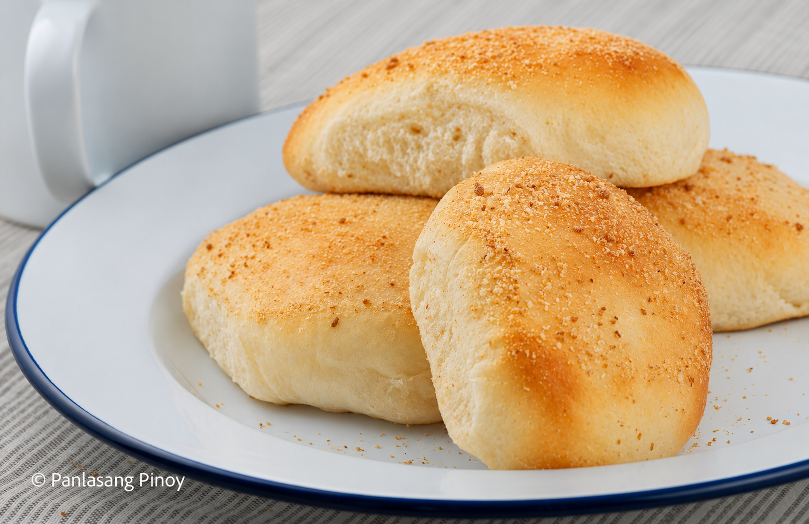

PANDESAL
Recipe by: Vanjo Merano

Pandesal, also spelled pan de sal, means “bread of salt” in Spanish. It is one of the most popular staple bread rolls in the Philippines. These soft and slightly sweet rolls are commonly enjoyed for breakfast or as a snack.
INGREDIENTS:
- 2 cups all-purpose flour
- 2 cups bread flour
- 1/2 cup white sugar
- 5 tbsp butter, melted
- 1 tsp baking powder
- 1 1/4 cups warm milk
- 1 pouch rapid-rise yeast
- 1 tsp salt
- 1 cup bread crumbs
- 1 piece raw egg
- 1 tbsp cooking oil
Instructions:
- Combine the yeast, 2 tablespoons sugar, and warm milk and stir until the yeast and sugar are fully dissolved.
- In the mixing bowl, combine the dry ingredients starting with the flour then the remaining sugar, salt, and baking powder . Mix well by stirring.
- Add the egg, butter, cooking oil, and yeast-sugar-milk mixture in the mixing bowl with the dry ingredients then mix again until a dough is formed. Use your clean hands to effectively mix the ingredients.
- In a flat surface, knead the dough until the texture becomes fine. For faster and easier kneading, you may use a Stand Mixer with dough hook.
- Mold the dough until the shape becomes round then put back in the mixing bowl. Cover the mixing bowl with damp cloth and let the dough rise for at least 1 hour.
- Put the dough back to the flat surface and divide into 4 equal parts using a dough slicer.
- Roll each part until it forms a cylindrical shape.
- Slice the cylindrical dough diagonally (These slices will be the individual pieces of the pandesal).
- Roll the sliced dough over the breadcrumbs and place in a baking tray with wax paper (makes sure to provide gaps between dough as this will rise later on).
- Leave the sliced dough with breadcrumbs in the tray for another 10 to 15 minutes to rise.
- Pre-heat the oven at 375 degrees Fahrenheit for 10 minutes.
- Put the tray with dough in the oven and bake for 15 minutes.
- Turn off the oven and remove the freshly baked pandesal.
- Serve hot, share, and enjoy!